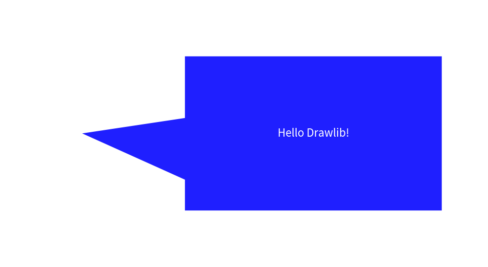
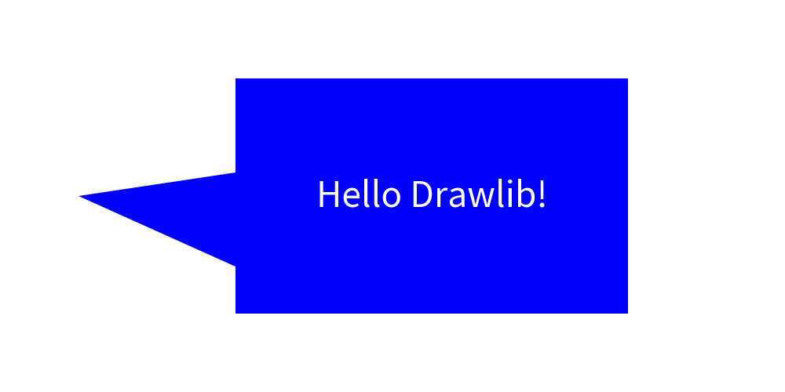
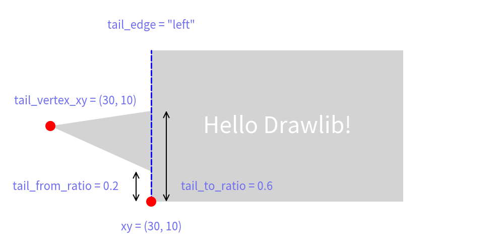

===============
Bubblespeech
The Bubblespeech feature in Drawlib allows you to create irregular bubble-shaped speech graphics, often used in illustrations.
It's implemented within the smartarts module as part of the Smart Art functions, offering advanced shape drawing capabilities.
Here's an example of using Bubblespeech in Drawlib:
from drawlib.canvas import config, save
from drawlib.colors import Colors
from drawlib.smartarts import bubblespeech
from drawlib.text import text
from drawlib.types import Style
config(width=100, height=50)
bubblespeech(
xy=(30, 10),
width=50,
height=30,
tail_edge="left",
tail_start_ratio=0.2,
tail_vertex_xy=(10, 25),
tail_end_ratio=0.6,
style=Style(line_width=0, fill_color=Colors.Blue),
text="Hello Drawlib!",
textstyle=Style(text_size=32, text_color=Colors.White),
)
save()

This function call draws a bubble speech shape with a tail starting from the right edge, beginning at 30% from the bottom, extending to 70% along its path.
from drawlib.canvas import config, save
from drawlib.colors import Colors
from drawlib.smartarts import bubblespeech
from drawlib.text import text
from drawlib.types import Style
config(width=100, height=50)
bubblespeech(
xy=(30, 10),
width=50,
height=30,
tail_edge="left",
tail_start_ratio=0.2,
tail_vertex_xy=(10, 25),
tail_end_ratio=0.6,
style=Style(line_width=0, fill_color=Colors.Blue),
text="Hello Drawlib!",
textstyle=Style(text_size=32, text_color=Colors.White),
)
save()

image1.png
In the example above, the options for drawing Bubblespeech are specified. The key parameters include:
- xy: Coordinates specifying the position of the bottom-left corner.
- tail_edge: Specifies the edge from which the tail extends (
left,right,bottom,top). - tail_from_ratio: Determines where the tail starts along the specified edge (0.0 to 1.0).
- tail_vertex_xy: Specifies the exact vertex location of the tail.
- tail_to_ratio: Specifies where the tail ends along its path (must be greater than tail_from_ratio).
Please refer the below picture for understanding the parameters.
from drawlib.canvas import config, save
from drawlib.colors import Colors, Colors140
from drawlib.lines import line
from drawlib.shapes import circle
from drawlib.smartarts import bubblespeech
from drawlib.text import text
from drawlib.types import Style
config(width=100, height=50)
bubblespeech(
xy=(30, 10),
width=50,
height=30,
tail_edge="left",
tail_start_ratio=0.2,
tail_vertex_xy=(10, 25),
tail_end_ratio=0.6,
style=Style(line_width=0, fill_color=Colors140.LightGray),
text="Hello Drawlib!",
textstyle=Style(text_size=32, text_color=Colors.White),
)
line((30, 10), (30, 40), style=Style(line_width=2, line_style="dashed", line_color=Colors.Blue))
text((30, 45), 'tail_edge = "left"')
circle(xy=(30, 10), radius=1, style=Style(line_width=0, fill_color=Colors.Red))
text((30, 5), "xy = (30, 10)")
line((27, 10), (27, 16), arrowhead="<->")
text((13, 13), "tail_from_ratio = 0.2")
circle(xy=(10, 25), radius=1, style=Style(line_width=0, fill_color=Colors.Red))
text((15, 30), "tail_vertex_xy = (30, 10)")
line((33, 10), (33, 28), arrowhead="<->")
text((45, 13), "tail_to_ratio = 0.6")
save()

image2.png
Ellipse like bubblespeech is not supported yet.
© 2026 drawlib by Yuichi Ito. Released under the Apache 2.0 License.